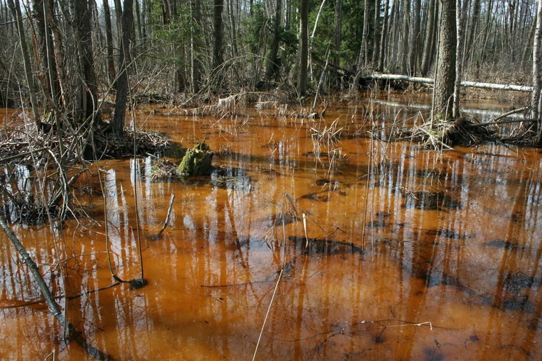

Neišnykusi Lietuva
Sveiki, šis puslapis skirtas visiems gamtos mylėtojams ir tam prijaučiantiems. Bet nesupraskite neteisingai, čia nerasite informacijos:
- - kur galima įsirengti stovyklavietę ir prišiukšlinti;
- - kur galima surengti pikniką ir prisigerti;
- - kur galima nuskinti paskutines žibutes (įtrauktas į Raudonąją knygą");
- - kur galima sužvejoti paskutines žuvis (panaudojant akumuliatorių arba tinklus);
- - kur ir už kiek nusipirkti batus;
- - kur ir kaip surengti kompiuterinių žaidimų turnyrą.


